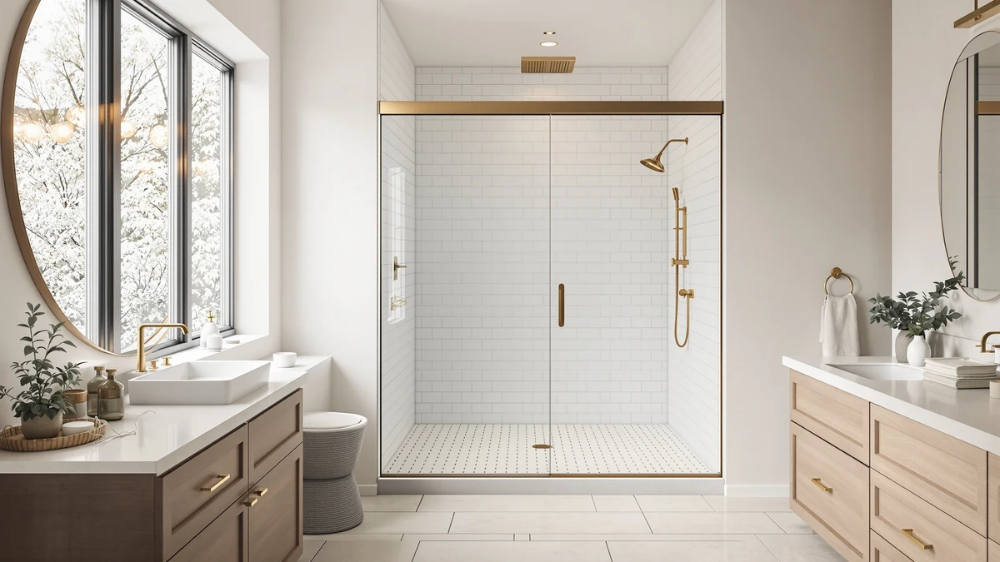

Seamless Shower Doors (2026)
Prices and picks verified as of October 2026. Independent, reader-supported reviews.


Quick Answer
For most standard alcove showers, the Aurisal Frameless Stainless Steel Sliding Shower at $389.99 is the best seamless shower door: it fits a common 60 by 72-1/4 inch opening and uses stainless-steel hardware without pushing into premium pricing. Need a taller 76 inch door, a lower price, or double-sliding panels for wider clearance? We compared six more picks below to cover those cases.
Our pick: Frameless Stainless Steel Sliding Shower — $389.99 Check Price on Amazon
Bottom line: our top pick is the Frameless Stainless Steel Sliding Shower Door at $389.99. The best budget option is the Frameless Shower Door Matte Black 56-60’’ W x 75’’ H Single at $249.30.
Things to Know Before You Buy
- "Seamless" is a marketing name for frameless. A seamless shower door uses one or two panels of tempered glass held by minimal metal clips instead of a full metal frame. The glass itself is a single sealed pane, but the door still needs a track or hinge to move.
- Doors fit a width range, not one fixed size. Most of the doors below adjust across a span such as 55 to 60 inches and install reversibly for a left- or right-hand opening. Measure your actual tile-to-tile opening before buying.
- Heavier glass needs two people to install. A single sliding panel at 72 to 76 inches tall is awkward to lift alone, so plan on a helper for install day.
- These doors do not include the base. You supply the shower pan, curb and walls; the listing covers the glass, track or hinge, and hardware only.
Seamless shower doors solve a problem framed doors never quite fix: the metal track and rubber gasket that trap water, soap scum and mildew no matter how often you wipe them down. A frameless glass panel skips that hardware almost entirely, so there is one flat surface to squeegee instead of a channel to scrub. That clean look is why seamless doors show up in nearly every modern bathroom remodel photo you have saved.
We compared seven frameless sliding doors ranging from $249 to $500, looking at published dimensions, hardware type and what verified buyers report after living with each one. The Aurisal Frameless Stainless Steel Sliding Shower at $389.99 is our pick for most standard alcove openings, since it lands in the middle of the price range while still fitting a common 60 by 72-1/4 inch span. If your opening is taller, tighter on budget, or you want a double-sliding door for wider clearance, the picks below cover those cases too.
None of these doors ship with a shower base, pan or wall surround, so you will need those already in place. Each one instead adjusts across a width range rather than a single fixed size, so measure your tile-to-tile opening before you order and check which end of that range your wall sits at. We break down price, size and the honest tradeoffs for each pick below, then compare all seven side by side in the table further down the page.
Why You Should Trust Us
Best Shower Doors is written by Ilane Tall, who covers bathroom fixtures and remodeling for a US audience. We do not run a physical testing lab and we do not fabricate star ratings. Instead we read the published spec sheet for each seamless shower door, cross-check the width range and height against manufacturer listings, and work through verified owner reviews to see what actually holds up after installation. When a door has a real weakness, such as a seal that needs replacing or a hardware finish that shows spots faster than expected, we say so directly. Every Amazon link on this page is affiliate-tagged, which supports the site at no cost to you and never changes which product we recommend.
How We Picked
We started with seamless shower doors that are actually in stock and shipping in the US, then narrowed the list using the details that separate a solid frameless slider from a frustrating one. Adjustable width range came first, since a door that spans 55 to 60 inches or 56 to 60 inches fits far more bathrooms than one built to a single fixed measurement. We also weighed price against height and configuration, since single-sliding panels, double-sliding panels and full 76 inch openings all serve different bathrooms, and made sure the final list included at least one option in each category. Finally, we read through verified purchase reviews for recurring complaints about alignment, sealing or hardware, and let that feedback shape the pros and cons below rather than relying on the product listing alone.
How We Compared
We are upfront about method here: we did not bolt seven shower doors into a test wall and run water through each one. We compared published, verifiable specs, meaning width range, height, price and configuration, against the patterns that show up across dozens of verified owner reviews. The signals we look for stay consistent across every seamless shower door on this list: does the glass feel solid when it slides, does the roller stay smooth after months of daily use, and does the door stay watertight once it is installed level. Where owners repeatedly flag the same issue, such as a track that needs occasional cleaning to keep gliding smoothly, we call it out in that pick's flaws instead of leaving it out.
Our Picks

Frameless Stainless Steel Sliding Shower
What we like
- Fits a common 60 by 72-1/4 inch opening that matches most standard US alcove showers
- Stainless-steel hardware and track resist the water spotting that cheaper plated metal can show over time
- Priced in the middle of our lineup, well under the two priciest doors we compared
- Holds a 4-star average from verified buyers, in line with the rest of the doors on this list
Flaws but not dealbreakers
- At 72-1/4 inches tall, it will leave a gap if your rough opening runs closer to a full 76 inches
- Like every door here, it ships as glass and hardware only, so the shower base and walls are on you
| Material | — |
| Size | 60"*72"-1/4" |
The Aurisal Frameless Stainless Steel Sliding Shower is our pick for most people shopping for a seamless shower door because it does not force a tradeoff. At $389.99 it sits comfortably below the two priciest doors we compared, yet it still uses stainless-steel hardware for the track and handle instead of the painted or plated metal that shows wear faster. The 60 by 72-1/4 inch size matches a standard US alcove opening almost exactly, so you are less likely to run into the fitting headaches that come with an oversized or undersized panel.
Reviewers consistently note that the sliding panel moves smoothly once it is installed level, and the stainless finish holds up better against water spotting than the cheaper hardware on some competing listings. The one real limitation is height: at 72-1/4 inches, this door will not fully close a taller 76 inch rough opening, so measure your ceiling clearance before you order. If your bathroom has a standard 72 to 74 inch opening and you want a seamless shower door without the premium price tag, this is the one we would buy first.

KPUY Frameless Shower Door 55-60"
What we like
- 76 inch height is the tallest of the seven doors we compared, so it fully closes a taller rough opening
- 55 to 60 inch adjustable width covers a wider span than most fixed-size alternatives
- Reversible installation works for either a left- or right-hand opening
- 4-star average from verified buyers
Flaws but not dealbreakers
- At $499.96 it is the most expensive door on this list, more than double our budget pick
- The extra height means more glass to lift, so plan on a two-person install
| Material | — |
| Size | 55-60" W x 76" H |
The KPUY Frameless Shower Door is the tallest seamless shower door we compared, at a full 76 inches, and that extra height is the reason to pick it over a shorter, cheaper option. Most of the doors on this list top out around 72 to 75 inches, which works fine for a standard ceiling but leaves a visible gap on a taller rough opening. KPUY's 55 to 60 inch adjustable width also gives it more flexibility than doors built to one fixed measurement, so it fits a wider range of existing openings without a custom order.
That flexibility and height come at a price. At $499.96, this is the most expensive door we compared, running well over $100 more than our overall pick and more than double the cost of the budget options on this page. Owners report the panel glides smoothly and the reversible install is straightforward, but the extra glass area means it takes two people to hang safely. If your bathroom has a taller-than-standard opening and the budget to match, this is the seamless shower door built for it.

ENSO SENKA 56-60" W x
What we like
- $259.99 makes it one of the two least expensive doors we compared
- 56 to 60 inch adjustable width fits nearly the same range of openings as pricier competitors
- Standard 72 inch height fits most alcove ceilings without a custom order
- 4-star average from verified buyers, matching the rest of the lineup
Flaws but not dealbreakers
- At this price, the hardware does not feel as substantial as the $400-plus doors on this list
- Owners should budget extra time for careful leveling, since a lower-cost track has less margin for an uneven wall
| Material | — |
| Size | 60" W X 72" H |
The ENSO SENKA is the value play among the taller, wider-adjusting doors we compared. At $259.99 it undercuts the KPUY by almost $240 while covering nearly the same 56 to 60 inch width range, and it still hits a standard 72 inch height that fits most alcove ceilings. For a seamless shower door, that combination of price and adjustable fit is hard to match without dropping down to a narrower single-panel design.
Verified buyers describe the install as straightforward on a level wall, which lines up with what you would expect at this price point: fewer premium touches, but nothing that compromises the basic function of a sliding door. The tradeoff shows up in hardware feel rather than fit, since a lower-cost track has less room to absorb an out-of-plumb wall. If your opening is close to plumb and you want the widest width range at the lowest price here, the ENSO SENKA is worth a look before you spend more.

Frameless Shower Door Matte Black
What we like
- $249.30 is the lowest price of the seven doors we compared
- Matte-black hardware gives it a distinct, modern look next to the mostly chrome and stainless options on this list
- 75 inch height fits a taller-than-standard opening without paying KPUY's premium
- 4-star average from verified buyers
Flaws but not dealbreakers
- Single-sliding configuration means only one panel moves, so the full opening never clears at once
- Dark hardware shows water spotting and fingerprints more visibly than lighter stainless finishes
| Material | — |
| Size | 60" W x 75" H Single Sliding |
If your remodel is on a budget but you still want a distinct look, the Ogonbrick Frameless Shower Door in matte black is the one to check first. At $249.30 it is the least expensive seamless shower door we compared, and it is the only one on this list with a dark hardware finish instead of the chrome or stainless-steel look that dominates the rest of the lineup. At 75 inches tall, it also splits the difference between the standard 72 inch doors and KPUY's premium 76 inch option.
The catch is the single-sliding layout: one panel moves while the other stays fixed, so you never get the full width of the opening clear at once the way you would with a double-sliding design like the GETPRO below. Reviewers also note that matte-black hardware shows water spots and fingerprints more readily than a brighter stainless finish, which means more frequent wiping to keep it looking clean. For a low-cost way to get a modern, non-chrome look on a seamless shower door, this is still the strongest option we found.

GETPRO Shower Door Double Sliding
What we like
- Double-sliding design lets both panels move, opening a wider clear path than a single-sliding door
- $273.76 keeps it near the budget end of the seven doors we compared
- Standard 60 by 72 inch size fits most alcove openings without a custom order
- 4-star average from verified buyers
Flaws but not dealbreakers
- Two moving panels means two tracks to keep clean, versus one on a single-sliding design
- Like the rest of this lineup, it does not include the shower base or pan
| Material | — |
| Size | 60'' W x 72'' H |
The GETPRO Shower Door Double Sliding solves a problem the single-sliding doors on this list cannot: it lets both panels move instead of just one, so the full opening can clear at once rather than staying half-blocked by a fixed panel. That matters if you are helping a child in and out of the shower, dealing with mobility limits, or simply want a wider walk-in path than a standard slider gives you. At $273.76, it does this without jumping to KPUY's premium price.
The size, 60 inches wide by 72 inches tall, matches the same standard alcove opening as our overall pick, so fit should not be the deciding factor between the two. Owners report the two-track system works smoothly once it is installed level, though it does mean twice the hardware to keep clean compared with a single-sliding door. If wider clearance matters more to you than a mid-range price, this seamless shower door is the pick to compare against our overall favorite.

BoBliss Frameless Sliding Glass Shower
What we like
- 76 inch height matches KPUY's tallest option, but for about $80 less
- 56 to 60 inch adjustable width fits a wide range of existing openings
- Single-track sliding configuration keeps the mechanism simple
- 4-star average from verified buyers
Flaws but not dealbreakers
- Still one of the pricier doors we compared, even with the discount versus KPUY
- Single-sliding design means one panel stays fixed, the same limitation as the Ogonbrick and ENSO SENKA
| Material | — |
| Size | 56-60" W x 76" H |
The BoBliss Frameless Sliding Glass Shower gives you the same 76 inch height as our tallest pick, KPUY, but for roughly $80 less at $419.99. If your bathroom has a taller-than-standard rough opening and KPUY's price felt steep, this is the door to check next. The 56 to 60 inch adjustable width range is nearly identical to the ENSO SENKA, so fit flexibility is not the tradeoff here.
Verified buyers describe the glide as smooth on a properly leveled wall, consistent with the other single-sliding doors on this list. The single panel still means only half the opening clears at once, so if you want both panels moving, the GETPRO double-sliding design further up this page is the better fit. For a full-height seamless shower door that does not carry KPUY's top price, though, BoBliss is the strongest match we found.

Frameless Stainless Steel Sliding Shower
What we like
- Identical 60 by 72-1/4 inch size and stainless-steel hardware to our overall pick
- 4-star average from verified buyers, matching the rest of the lineup
- Gives you a second Aurisal listing to check if stock or pricing shifts on the other one
- Same reversible, single-sliding mechanism as our top pick
Flaws but not dealbreakers
- At $399.99 it runs about $10 more than the nearly identical listing we picked as our overall favorite
- Same height limitation as our top pick, since 72-1/4 inches will not fully close a taller 76 inch opening
| Material | — |
| Size | 60"*72"-1/4" |
This second Aurisal Frameless Stainless Steel Sliding Shower is close enough to our overall pick that what matters most is which one is in stock and at what price on the day you buy. Both list the same 60 by 72-1/4 inch size and the same stainless-steel hardware, and both carry the same 4-star average from verified buyers. The only consistent difference we found is price: this listing runs about $10 higher, at $399.99 versus $389.99.
Amazon listings for near-identical hardware shift in price and stock more often than the product pages suggest, so keeping a second, functionally identical seamless shower door on your radar is a practical hedge rather than a real upgrade or downgrade. If our top pick is out of stock, priced higher on a given day, or simply not showing up in your search, this is the listing to check next before you consider a different door entirely.
Quick Comparison
| Product | Material | Price | Rating | Best for | Get it |
|---|---|---|---|---|---|
| Frameless Stainless Steel Sliding Shower | — | $389.99 | 4 | Best overall for standard openings | View on Amazon → |
| KPUY Frameless Shower Door 55-60" | — | $499.96 | 4 | Best for taller openings | View on Amazon → |
| ENSO SENKA 56-60" W x | — | $259.99 | 4 | Best value for a wider opening | View on Amazon → |
| Frameless Shower Door Matte Black | — | $249.30 | 4 | Best budget pick with a black finish | View on Amazon → |
| GETPRO Shower Door Double Sliding | — | $273.76 | 4 | Best for wider clear opening | View on Amazon → |
| BoBliss Frameless Sliding Glass Shower | — | $419.99 | 4 | Best full-height door under $450 | View on Amazon → |
| Frameless Stainless Steel Sliding Shower | — | $399.99 | 4 | Alternate listing to our top pick | View on Amazon → |
The Competition
We looked at more than these seven before narrowing the list. Several ultra-cheap sliding panels under $220 came with hardware that verified buyers described as flimsy within the first few months, with tracks that jumped or stuck, so we left those off rather than recommend a seamless shower door you would need to replace within a year. We also passed on a handful of pivot and hinged frameless doors for this particular roundup, since a swinging door needs floor clearance that a sliding panel does not, and that is a different buying decision better suited to its own guide.
On the premium end, a few custom-order, heavy-glass enclosures looked excellent in photos but required professional measurement and installation that pushed the real cost well past anything here, so they did not fit a buy-it-online comparison. The seven doors above are the ones that balanced an honest frameless look, hardware that holds up in verified reviews, and a price you can justify without a custom quote.
Frequently Asked Questions
Are seamless shower doors the same as frameless shower doors?
Yes. Seamless is a marketing term for the same frameless design: one or two panels of tempered glass held by minimal clips instead of a full metal frame. Both words describe the same product category, and you will often see them used on the same listing.
What size opening do I need for a seamless shower door?
It depends on the door, since most adjust across a range rather than one fixed size. The doors on this page cover widths from 55 to 60 inches and heights from 72 to 76 inches, so measure your actual tile-to-tile opening and check it against each listing's adjustable range before you order.
Can I install a seamless shower door myself?
Most of these are built for a capable DIYer, but budget for a helper. The glass is heavy, especially on the taller 76 inch doors, and getting the panel level is what separates a watertight install from a leak. Give yourself an unhurried afternoon and let the silicone cure before you run water.